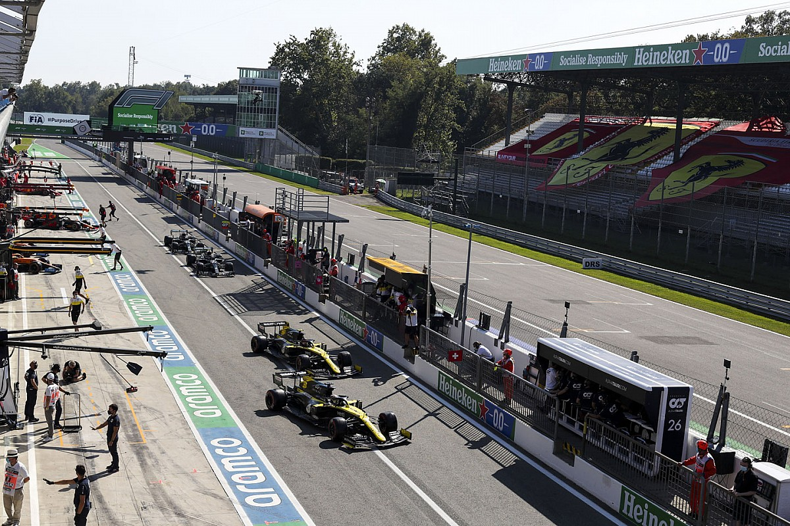

F1 depån på klassiska banan Monza i Italien
Formel 1 är ett världsmästerskap i motorsport med bilar som går i 320 km/h. Det är världens dyraste motorsport med
de snabbaste och mest avancerade bilarna. Formel 1 är en av de mest klassiska motorsportarena från 50-talet
och är den högsta klassen man kan köra i inom motorsport. Formel 1 körs på 6 kontinenter med mer än 20 tävlingar
varje säsong. Vissa banor är statsbanor där man bygger en bana inne i en stadskärna medans vissa är fina
klassiska racingbanor med fina anläggningar.
En F1 helgs upplägg
- Fredag: FP1, FP2 (Free practice)
Helgen börjar med 2 träningspass FP1 och FP2 som används för att prova bilen på banan och lägga upp strategier inför helgen. - Lördag: FP3, Kval
Lördagen börjar med ett sista träninspass för att förbereda kvalet. Sedan är det kvalet för att bestämma startpositionerna för Racet.
Kvalet består av 3 rundor Q1, Q2, Q3. I Q1 är alla 20 bilar med och försöker få en så snabb tid som möjligt runt ett varv.
De 15 bilarna med snabbast tid runt ett varv går vidare till Q2 och de 5 som åker ut få den startplatsen de hamnade på.
I Q2 är det 15 bilar som åter igen ska få snabbast tid runt ett varv. De 10 snabbaste går vidare till Q3 och de andra 5 får sin startposition.
Q3 är den sista rundan där man bestämmer startordningen för de första 10 bilarna. Det gäller att få snabbast tid runt ett varv och den med snabbast
tid får starta första och den med näst snabbast andraplats osv. - Söndag: Race
På söndagen är det race. Man kör ett visst antal varv runt banan beronde på hur lång banan är. Tiden för ett race är runt 90 minuter.
Det handlar om att komma i mål först efter alla varv. Beroende på vilken plats man kommer i mål så får man olika poäng. Alla inom top 10 för poäng
och den som har kört det snabbaste varvet får ett extra poäng.